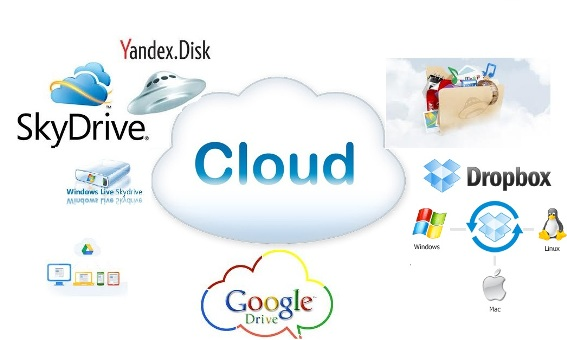

Bulut teknolojisi,kısaca dosyaları ve verileri online bir platformda depolama hizmetidir. Bu sistemler genellikle herhangi bir kurulum gerektirmez. Dropbox, Yandex Disk, Google Drive, Mega gibi bulut hizmetlerinden birine üye olarak, size verilen disk alanı kadar dosya yükleyebilirsiniz. Bu dosyalar gelişmiş veri tabanlarında muhafaza edileceği için herhangi bir şekilde kaybolmayacak, erişime açmadığınız sürece 3.şahıslar tarafından görüntülenemeyecektir.
Bu sistemler, web protokollerini kullanarak kullanıcı-sunucu temelli bir tabanda işlem gerçekleştirir. Bulut hesaplarına hemen hemen bütün bilgisayarlardan ve akıllı cihazlardan erişim sağlanabilir. Sunucu tabanlı bir uygulama sağlayan bulut sistemlerinde, bütün kullanıcılar uygulamalara erişebilir. Dosyalar ve veriler firmaların sunucularında saklanır, kullanıcılar ise kendilerine ait olan alana şifre ile ulaşarak dosya yükleyebilir veya mevcut dosyalarını düzenleyebilir.
Bulut sistemleri, yalnızca dosya depolamaya yaramaz. Bunun yanında birçok farklı işlevleri de vardır.
Örneğin bulut
hesabınıza yüklediğiniz bir dosyanın başkaları tarafından erişilebilir olmasını istiyorsanız, dosya için
link
oluşturabilirsiniz. Linki gönderdiğiniz kişiler dosyayı buradan cihazlarına indirebilirler.
Ayrıca bulut sistemlerinin hemen hemen tamamında ön izleme seçeneği olmaktadır. PDF, Word, Excel dosyaları
bu sistemden
okunabilir, ses ve video dosyaları düzenlenebilir. Bazı bulut sistemleri, altyapıları üzerinden sanal
masaüstü hizmeti
de sunmaktadır. Yani bu sistemleri bir masaüstü gibi düzenlemek ve kullanmak mümkündür. Bu imkan sayesinde
bilgisayarda
alan işgal edilmesi tamamen önlenebilmektedir.

Şu anda farkında olmasanız da büyük olasılıkla bulut bilgi işlem kullanıyorsunuz. E-posta göndermek, belge
düzenlemek,
film veya TV izlemek, müzik dinlemek, oyun oynamak, resimleri veya diğer dosyaları depolamak için çevrimiçi
bir
hizmet
kullanıyorsanız, tüm bunların altyapısı büyük olasılıkla bulut bilişim tarafından sağlanıyordur. Bulut
teknolojisi
yaklaşık on yıllık bir geçmişe sahip olmakla birlikte, küçük ölçekli işletmelerden küresel kuruluşlara,
devlet
kurumlarına ve sivil toplum örgütlerine kadar çok sayıda kuruluş, farklı amaçlarla bu teknolojiyi zaten
benimsemiş
durumda.
Bulutta Çalışan Otel Yönetimi Sistemine ElektraWeb Örnek Verlebilir